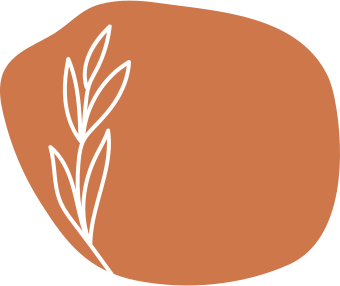

TERAPIA WSPIERAJĄCA DLA MAM i KOBIET W CIĄŻY
TERAPIA WSPIERAJĄCA DLA MAM i KOBIET W CIĄŻY
Nazywam się Marlena i jestem psycholożką, psychoterapeutką psychodynamiczną, oraz
szczęśliwą mamą.
Proces stawania się mamą a później macierzyństwo pokazało mi z jak ogromnym procesem
mierzą się kobiety a w konsekwencji jak wiele trudności mogą spotykać na swojej
drodze. Zauważyłam, że temat zmian biologicznych od początków ciąży aż po rozwiązanie
jest solidnie opracowany na szkołach rodzenia, warsztatach z fizjoterapeutami, specjalistami
od karmienia. O wiele mniej informacji i form wsparcia znalazłam w aspekcie zmian i
kryzysów psychologicznych.
Dlatego na podstawie swojego wykształcenia, doświadczenia zawodowego, dostępnej literatury oraz głębokiej potrzeby podzielenia się tym, co wiem z innymi, stworzyłam
projekt -„Więcej Niż Mama”.
Celem tej inicjatywy jest wspieranie kobiet w szerokim aspekcie związanym z ciążą i
macierzyństwem, szerzenie wiedzy psychologicznej oraz pokazywanie, że nowa rola mamy,
może przynieść za sobą korzyści i stać się wytrychem dla rozwoju kobiety.
Prowadzę terapię wspierającą dla kobiet oraz warsztaty grupowe dedykowane kobietom,
które chcą z większym zrozumieniem przejść przez ogromną zmianę, którą przynosi
rodzicielstwo w wielu wymiarach życia.